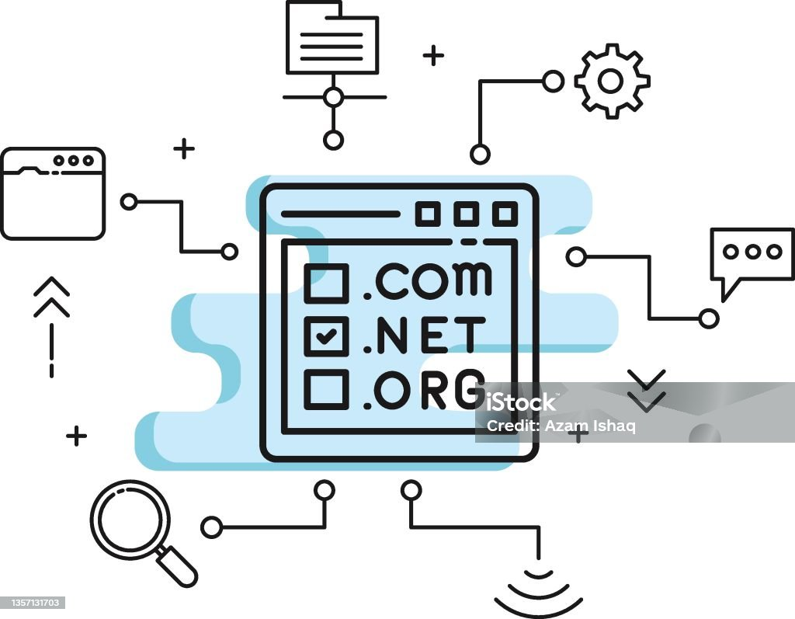

Apa itu Domain?
Domain adalah alamat unik dan mudah diingat yang mengidentifikasi komputer atau situs web di internet, menggantikan alamat IP yang berupa deretan angka. Domain berfungsi seperti "nama" untuk website Anda, misalnya google.com, dan terdiri dari nama domain utama (seperti "google") dan ekstensi (seperti ".com").
Fungsi utama
- Memudahkan akses: Pengguna tidak perlu mengingat alamat IP yang rumit untuk mengunjungi sebuah situs web; cukup ketik nama domainnya.
- Identifikasi unik: Setiap domain adalah unik, memastikan pengunjung menemukan situs yang tepat.
- Menggantikan alamat IP: Domain adalah representasi yang dapat dibaca manusia untuk alamat IP fisik sebuah server.
Bagian-bagian domain:
- Nama Domain Utama (Second-Level Domain/SLD): Bagian unik yang didaftarkan, seperti "google" pada
- Ekstensi (Top-Level Domain/TLD): Bagian akhir dari domain, seperti .com, .org, atau .id. TLD dapat dibagi lagi menjadi: gTLD (Generic Top-Level Domain): Digunakan untuk tujuan umum, seperti .com, .net, dan .org. ccTLD (Country Code Top-Level Domain): Merupakan kode negara, seperti .id untuk Indonesia atau .us untuk Amerika Serikat.